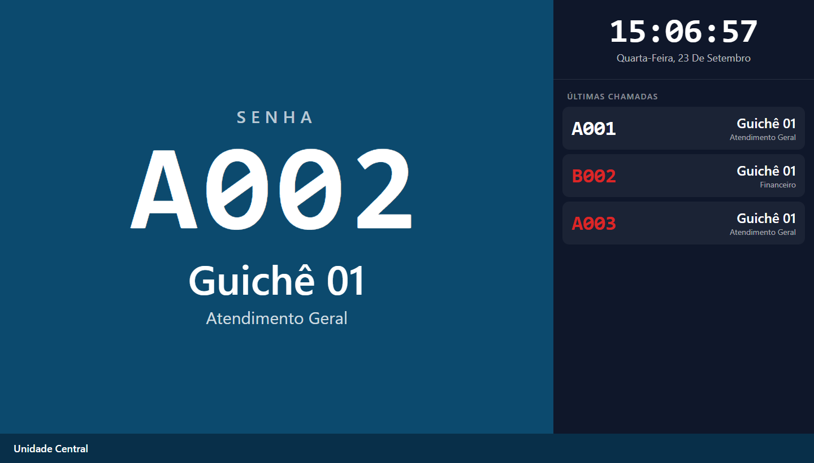
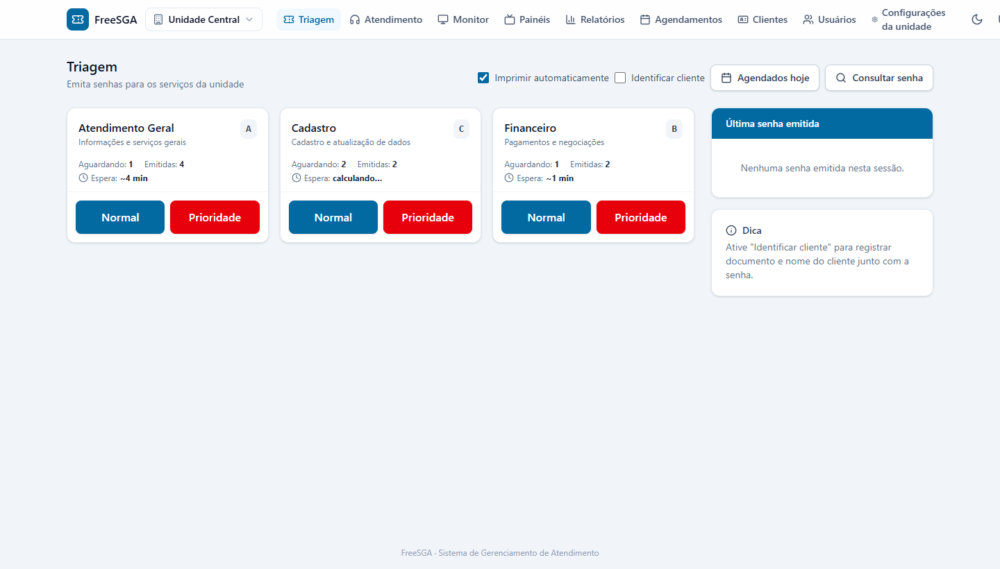
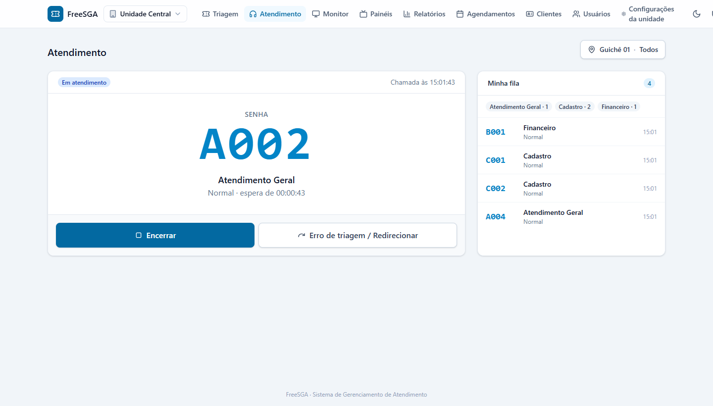
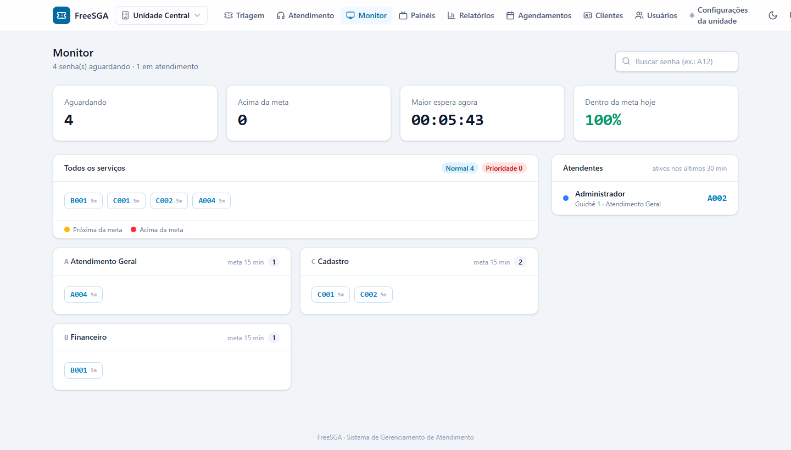
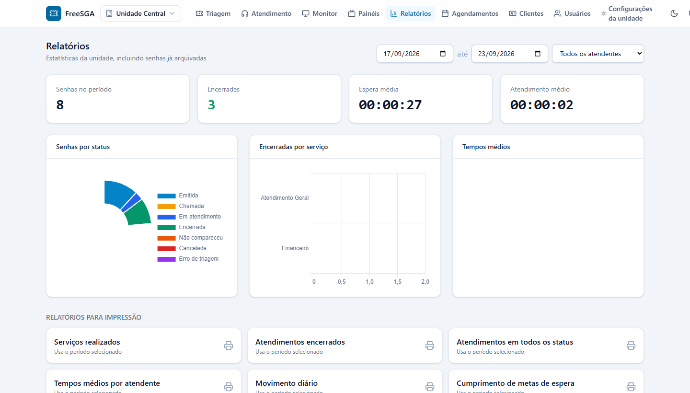
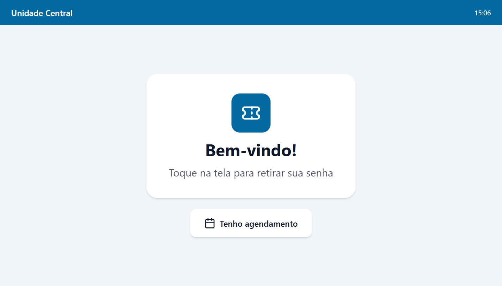
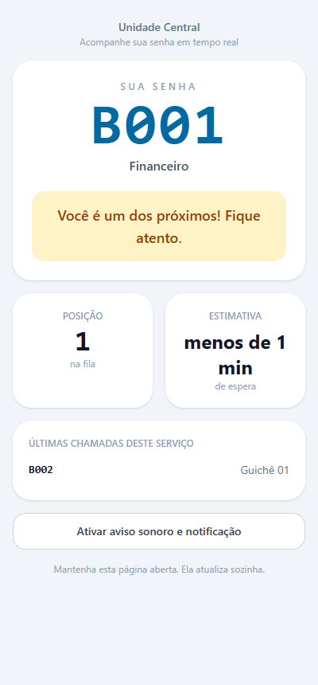

O FreeSGA organiza a fila da sua recepção: emite senhas, chama no painel, controla o atendimento e mede tudo — do guichê ao celular do cliente. Instale no seu servidor, sem mensalidade.
Senha
A042
Guichê 03
Atendimento Geral
Últimas
Tudo o que uma recepção precisa, sem custo de licença
Licença MIT. Use, modifique e distribua sem mensalidade nem limite de guichês.
Painel, monitor e filas atualizam na hora via WebSocket, com fallback automático.
QR code na senha abre a fila no celular do cliente, com aviso de "sua vez".
Mascaramento de CPF, auditoria de ações e retenção configurável de dados.
Cobre todo o fluxo, da emissão da senha ao relatório
Emissão e impressão de senhas normais e prioritárias, com identificação opcional do cliente.
Chamar, rechamar, iniciar, encerrar com serviços realizados, não comparecimento e redirecionamento.
Tela para a TV da recepção com som e voz, sem precisar de login.
Filas da unidade em tempo real, com transferir, cancelar e reativar senhas.
Gráficos e relatórios de produtividade, tempos, metas e satisfação, prontos para imprimir.
Agenda por serviço; a chegada do cliente vira senha na triagem ou no totem.
Cadastro, histórico de senhas e direitos do titular (exportar e anonimizar).
Atendentes, lotações por unidade e perfis de acesso por módulo.
Serviços da unidade, contadores, impressão, atendentes e todos os recursos opcionais.
Telas reais do FreeSGA







Recursos que normalmente só existem em sistemas pagos
QR na senha com posição na fila, tempo estimado e aviso de proximidade.
Alertas no monitor quando a fila estoura a meta, com indicadores do dia.
Almoço, intervalo e reunião com controle de tempo e relatório.
Impressão direta ESC/POS e totem de autoatendimento em tela cheia.
Avisos por WhatsApp/SMS e pesquisa de satisfação (NPS/CSAT) por atendente.
Registro de ações sensíveis, mascaramento de dados e retenção automática.
No seu servidor em poucos minutos
Requisitos: PHP 8.4+, Composer, Node.js e MySQL/MariaDB (ou PostgreSQL). Inclui broadcasting em tempo real com Laravel Reverb.
# clonar e instalar
git clone https://github.com/imaginarts/FreeSGA.git
cd FreeSGA
composer install
npm install && npm run build
# configurar e migrar
cp .env.example .env
php artisan key:generate
php artisan migrate --seed
# iniciar
php artisan serve # app
php artisan reverb:start # tempo real
php artisan queue:work # webhooks/avisosGratuito para sempre. Sem cadastro, sem mensalidade, sem limite de uso.